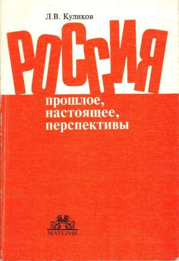

|
Мы сами должны быть теми изменениями, которые мы желаем видеть в мире. Махатма Ганди РОССИЯ. НОВЫЙ ВЗГЛЯД (Введение в теорию) ОТ АВТОРА Хорошо помню пятидесятые годы, когда много писали и говорили о забвении ленинских норм внутрипартийной жизни, усматривая в этом главную причину развития негативных явлений. Так нам было удобно думать, ибо в ту пору еще не хватало трех десятилетий, чтобы осмыслить высказанное кем-то мудрое наблюдение, что все почему-то жалуются на свою память и никто не жалуется на свой ум. Теперь мы, наконец-то, поняли или начинаем понимать, что причины наших провалов не в памяти или далеко не только в памяти. И перенос акцентов сегодня просто необходим. Л. Куликов, доцент. "ПРАВДА",27.12.1989г.
 Предлагаемая читателю работа (имеется в виду ее первое издание, вышедшее в конце 1995 года в издательстве "Материк" под названием "Россия: прошлое, настоящее, перспективы" ) ни дня не пролежала в столе автора, хотя делалась не для внешнего потребления. Это была попытка привести в определенную систему накопившиеся за много лет мысли и наблюдения коммунистического и посткоммунистического бытия, в котором, автор смеет так думать, он не был простым статистом. Познакомившиеся с рукописью компетентные люди сказали, что это надо публиковать, и при поддержке Международного фонда "Демократия" А.Н. Яковлева книга вышла в свет.Импульсом, пробудившим интерес автора к социально-экономическим проблемам, послужили события 50-х годов после смерти И. Сталина. В эти годы автору довелось быть секретарем комитета ВЛКСМ крупного НИИ в тогдашнем Ленинграде и к нему комсомольцы обращались с вопросами, на которые надо было как-то отвечать. Да и самому было интересно как мы дошли до жизни такой и что будет дальше. Пришлось засесть за классиков марксизма-ленинизма и вскоре убедиться, что все, что происходило и происходит в стране, к марксизму-ленинизму почти никакого отношения не имеет. При этом сам марксизм, его логика никаких эмоций, кроме восхищения, у автора не вызвал. Как это получилось? Неужели все это учинила кучка негодяев по преступному сговору? Но тогда зачем им нужно было создавать мясорубку, которая их же и перемалывала? Конечно, негодяи были, но не так же много! Автор нашел ответ на эти вопросы в том, что это результат отказа от марксистско-ленинских принципов, недопонимание фундаментальных идей марксизма и прямое следствие замены марксизма на сталинизм, хрущевизм и что-то там еще. Этого хватило в качестве успокоительного на много лет. Было ясно, что очень долго эта система не продержится, ибо она ничего не может, а после неизбежного экономического краха все встанет по своим местам. Быть тому свидетелем автор не надеялся. Все это было изложено в довольно объемной работе, которая по понятным причинам света не увидела, но сохранилась и есть смысл привести имеющийся в ней прогноз почти сорокалетней давности, построенный с позиций правоверного марксиста-самоучки. Ее краткое резюме поступило в секретариат Н.С. Хрущева 07.08.1961г. "В области экономики следует ожидать постепенного снижения темпов роста производства как в промышленности, так и в сельском хозяйстве... В дальнейшем следует ожидать развития отрицательных явлений в экономике... Значительно хуже обстоит дело в сельском хозяйстве... Многочисленные перестройки управления не привели к желаемым результатам опять-таки потому, что в основе их лежало стремление бюрократизировать систему управления при полном или почти полном игнорировании объективных экономических законов. В дальнейшем процесс разрушения производительных сил в сельском хозяйстве будет продолжаться, хотя и не исключаются некоторые колебания под воздействием случайных факторов... В ближайшей перспективе следует ожидать продолжения гонки вооружений и, возможно, обострения "холодной войны"... Возможность соглашения о разоружении исключается... В области внутренней политики следует ожидать развития и укрепления бюрократии..., будет расширяться демократия для меньшинства, способствуя созданию замкнутой касты людей, профессионально занимающихся функциями управления. Предполагается дальнейший рост путаницы в сфере управления на основе смешения функций хозяйственных и партийных органов. Недостатки бюрократического управления экономикой в сочетании с безответственностью хозяйственных руководителей будут все более и более вынуждать партийные органы заниматься повседневными делами промышленности, способствуя их бюрократизации. Постепенно партийные органы будут превращаться, с одной стороны, в толкача, а с другой - в щит, прикрывающий от народа недостатки экономики. Борьба с отрицательными явлениями в экономике и общественной жизни не даст видимого эффекта, т.к. корни этих явлений никак не затрагиваются. Следует ожидать увеличения числа служебных преступлений, связанных со злоупотреблением служебным положением, взяточничеством, очковтирательством и т.д. В идеологической работе будет усиливаться господство штампа, формализма, демагогии... В идеологической борьбе будут преобладать формы подавления, политика изоляции от идей зарубежного происхождения с постепенным переходом к полной изоляции и репрессиям по отношению к идеологическим противникам...". А нижеследующее было написано четверть века спустя в октябре 1986 года в письме на имя М.С. Горбачева после принятия новой редакции Программы КПСС: "Производительные силы это не только техника и рабочие руки, это еще и знания, уровень экономического и политического мышления руководителей, глубина понимания социальных и экономических процессов. Сейчас никто не понимает происходящего в стране... Вы не решите ни одной из стоящих перед страной проблем, дальше они будут только обостряться. В народном хозяйстве будут господствовать стихия и волюнтаризм, оно все время будет идти не в ту сторону. ...Местные власти возьмут или; уже взяли курс на изоляцию центральных органов от народа. Предвидеть последствия нетрудно. В этой ситуации будут вершиться дела пострашнее тех, с которыми Вы уже столкнулись. Образно говоря, если пока Вы имели дело с феодалами, то теперь будет создаваться мафия. Вот она то и будет говорить от имени народа и осуществлять его права, которые Вы собираетесь расширять. ...Преступность, коррупция, наркомания, проституция - расцвет их еще впереди. Особенно будет страдать молодежь. ...Несерьезность Вашей партии, лживость ее обещаний, неспособность довести что-либо до конца, интеллектуальная импотентность уже ни для кого не составляет секрета". Хочу напомнить еще раз, что все это сказано с позиций марксизма. Обратиться к анализу основ марксизма автора заставил обвальный крах как в странах социалистического лагеря, так и в странах разных частей света, в которых так или иначе пытались реализовать социалистическую модель развития. Сейчас хорошо известно, что результат в главном везде был до неправдоподобия одинаков: развал в экономике, диктатура в политике и разрушение основ нравственности. И это у абсолютно несхожих народов с разной историей, разным цветом кожи, разным уровнем развития, непохожими лидерами, по-разному внедрявшими социалистический образ жизни. Одинаковость результата могло означать только одно - наличие серьезной ошибки в фундаменте теории К.Маркса. Оставалось отбросить все те толкования и действия, которые отличали марксистов друг от друга, оставив то, в чем все они были согласны. Так автор вышел на идею ошибочности учения о прибавочной стоимости -краеугольного камня марксизма. Если это предположение верно, то от Единственно Верного Учения ничего не остается, ибо в нелогичности его авторов упрекнуть трудно, хотя и можно. История уже показала его несостоятельность как инструмента преобразования общества, но до того момента, пока не будет теоретически доказана закономерность этой несостоятельности, всегда будет основание говорить об ошибках в его применении на практике. И спор этот бесконечен, что и демонстрируют в России продолжатели дела Ленина-Сталина. Их драма, правда, еще и в том, что они всегда любили много говорить и никогда не могли, не умели и не хотели ничего слушать. Они вот такие. Потому мало было сказать, что это учение ложно, нужно было дать конструктивный ответ на вопрос: если прибавочная стоимость и прибыль как ее превращенная форма не есть неоплаченный труд, то что это такое? За ответом на этот вопрос автор отсылает читателя к предлагаемой работе, а здесь хотелось бы отметить следующее. Автор исходил из предположения, что К. Маркс был действительно крупным ученым и его ошибка связана с тем, что в то время он просто чего-то мог не знать. Как авторы геоцентрической системы еще не имели достаточных знаний для построения гелиоцентрической, как представления о том, что Земля плоская и покоится на трех китах, отвечали тогдашнему уровню знаний, как великий И. Ньютон не имел возможности построить теорию относительности, а Альберт Эйнштейн общую теорию поля. Такая посылка сужала поле поиска и позволяла оставаться в пределах науки, норм научной этики и общечеловеческой нравственности, не требовала искать врагов в виде, например, евреев или лиц кавказской национальности. Конкурс идей не может подменяться борьбой людей и ложная идея для своего утверждения обязательно требует конкретного врага. Потому ошибочная социально-экономическая теория неизбежно безнравственна и ее реализация всегда связана с увеличением человеческих страданий. Вина коммунистов не в том, что они поверили Марксу и Энгельсу — это всего лишь их беда. В Англии по сей день есть общество людей, считающих, что Земля плоская и никому это не мешает и им в том числе. Беда большевиков становится их тяжкой виной перед Россией и всем человечеством, когда свои идеи они стали претворять в жизнь ценой сначала тысяч, а потом и десятков миллионов человеческих жизней. За это уже надо отвечать хотя бы затем, чтобы будущие поколения ответственнее выбирали себе руководящие идеи и лучше думали над тем, как их претворять в жизнь и надо ли это делать. Следующим краеугольным камнем в основании предлагаемой концепции стали открытия этологов в области генетически обусловленных программ поведения стадных животных и людей в том числе. Связующим цементом послужили проверенные в других сферах знаний и общепризнанные законы и принципы. Таким образом вся концепция обрела строгую естественнонаучную базу, которая исключала необходимость каких-либо домыслов и гипотез. В ее основе нет ничего, что выводилось бы только и исключительно из социального опыта. В этом ее коренное отличие от других социально-экономических моделей. Потому социалистической и тем более коммунистической идеям в рамках предлагаемой модели нет места, они рождены сознанием как результат неадекватного отражения естественных процессов в человеческом обществе. Понятно, что в этом случае деление на классы, на правых и левых с их непримиримой конфронтацией являет собой недомыслие, уходящее корнями в стадное прошлое. Говорить о классовой борьбе сегодня так же глупо, как и жалеть о нашем пещерном бытии. Сегодня это уже не просто ошибка или невинное заблуждение, это становится преступлением против человечности, чем и был большевистский режим. И тот факт, что люди с завидным упорством действуют в этом ключе, в принципе ничего не меняет в этом утверждении. Вспомним Землю на трех китах. Автор хотел бы предупредить читателя, что усвоение логики предлагаемой работы требует иного стиля мышления, нежели тот, который утвердился в политологии и особенно в публицистике, не говоря уже о стереотипах эпохи развитого социализма. Один известный физик называл его гуманитарным и считал неспособным понять современные общественные проблемы, в отличие от естественнонаучного, свойственного точным наукам. Основы последнего сформулированы Р. Декартом и автор старался оставаться в этих рамках, тем более, что они были для него, как для механика и математика, вполне естественными. "Первое — никогда не принимать за истинное ничего, что я не познал бы таковым с очевидностью, иначе говоря, тщательно избегать опрометчивости и предвзятости и включать в свои суждения только то, что представляется моему уму столь ясно и столь отчетливо, что не дает мне никакого повода подвергать их сомнению. Второе — делить каждое из исследуемых многих затруднений на столько частей, сколько это возможно и нужно для лучшего их преодоления. Третье — придерживаться определенного порядка мышления, начиная с предметов наиболее простых и наиболее легко познаваемых и приходя постепенно к познанию более сложного, предполагая порядок даже и там, где объекты мышления вовсе не даны в их естественной связи. И последнее — составлять всегда перечни столь полные и обзоры столь общие, чтобы была уверенность в отсутствии упущений"1 После выхода первого издания автор познакомился с фундаментальным трудом доктора философии А.С. Ахиезера "Россия: критика исторического опыта", появившегося несколько раньше и, к сожалению, недостаточно известного из-за явно малого тиража и, скажем прямо, не очень сильной жажды широкой общественности серьезно разобраться в российских делах. Автор с удовлетворением обнаружил, что основные выводы здесь были те же, хотя методы исследования различны. Такие подарки в науке бывают не так уж часто и умолчать об этом факте при подготовке второго издания автор, понятно, не мог. Следовало, возможно, более широко использовать и работы зарубежных ученых, но того, что есть, автор считает достаточным для заинтересованного и относительно подготовленного читателя. Автор убежден, и для того достаточно оснований, что основная работа в рамках предлагаемой концепции еще вся впереди, ибо из стадии "этого не может быть, потому что не может быть никогда", она уже перешла в стадию "в этом что-то есть". Это нормальный путь любой новой идеи. Чрезвычайно важной, по мнению автора, особенностью предлагаемой концепции является тот факт, что она нейтральна по отношению ко всем религиозным системам, ибо стоит на общей для всех этической основе. Автор не ставил задачи сделать изложение популярным, ибо это не тот случай, когда нужна популяризация. "Наука подобна женщине: поскольку, оставаясь добродетельной, она принадлежит лишь своему мужу, ее уважают; когда она делается доступной всем, становится дешевой" - считал Р. Декарт и автор с ним согласен. Р.Декарт, Избранные произведения, М., 1950 г. Великий народ и Великая страна не могут по определению занимать 70-е место в мире по уровню своего развития и быть объектом безвозмездной гуманитарной поддержки, да к тому же и не очень благодарным. Владение ракетно-ядерным оружием здесь не может быть аргументом, ибо по этой логике любой вооруженный бандит должен быть признан достойным порядочного общества. "Особое предназначение" России А.С. Пушкин видел в том, что "...ее необъятные просторы поглотили монгольское нашествие". Сказано очень точно: именно поглотили, а не остановили, ибо монголы (если они вообще были) пришли в разоренную междоусобицами страну, не способную к сопротивлению. Уверенно можно говорить лишь об одном историческом предназначении, которое когда-нибудь потомки по достоинству оценят: Россия показывает миру, что и как нельзя и не надо делать. Это предназначение открыл гусарский офицер и философ П. Чаадаев: Россия — не Восток и не Запад, Россия — урок Востоку и Западу.
ПОСЛЕСЛОВИЕ Если общество жизнеспособно, то эта жизнеспособность должна проявляться в готовности учиться у истории. С.Булгаков Недостаточность развития общественного сознания нельзя компенсировать усложнением организационной структуры общества, ибо это в корне разнородные явления. Демократия здесь бессильна, ибо она требует более сложной организации, чем иерархическая пирамида авторитарного или тоталитарного режимов. Неразвитое сознание, наоборот, требует упрощения организации системы, стремясь сделать проблемы доступными его пониманию. А это либо дезинтеграция, либо авторитаризм, либо то и другое вместе, что наиболее вероятно. Очевидно, что проблемы региона с натуральным хозяйством существенно проще проблем страны и индустриального общества. Парадоксальность российской ситуации в том, что, реанимируя мощную госпартиерархию, власть загоняет себя и страну в угол, из которого для власть имущих два выхода: бежать из страны, что они, видимо, готовятся сделать, либо возрождать тоталитаризм на националистической основе. Последнее уже реализуется в бывших советских республиках и находит в соответствии с российской традицией поддержку у населения, что не может не вдохновлять российские власти вкупе с национал-патриотической оппозицией. Потому занятия своего ни те, ни другие не бросят и постараются довести начатое до естественного конца. Ни на что другое охлократия не способна, ибо она раба инстинктов, а не слуга интеллекта. Для человеческого общества это сегодня гибельно. Его шанс хотя бы в частичном осознании Россией этой опасности. "Предотвратить катастрофу может лишь целостная критика,— пишет А.С.Ахиезер,- способная преодолеть ограниченность современного ей этапа исторического процесса, помочь человеку обуздать свою собственную саморазрушительную стихию, изживать в себе шаг за шагом унаследованное от биологических предков стремление разрешать конфликты силой, прокладывать путь вперед посредством ненависти". Знаменитый бельгийский поэт и драматург Морис Метерлинк писал: "Дело вовсе не в том, чтобы освободиться от страстей, пороков или недостатков: все это невозможно, пока человек живет среди людей, ибо не правы те, кто называет страстью, пороком или недостатком то, что составляет основу человеческой природы. Дело в том, чтобы узнать во всех подробностях и тайнах те страсти, которыми обладаешь, и в том, чтобы можно было видеть их с такой высоты, с которой можно было бы смотреть на них, не опасаясь, что они нас собьют с ног или ускользнут от нашего контроля во вред нам самим и окружающим нас". Блестящие формулировки сущности проблемы самосохранения человеческого общества! Работы, подобный данной, делаются не для нагнетания катастрофического сознания, это не "Коммунистический манифест". Они пишутся для того, чтобы данные в них прогнозы не сбывались, чтобы общество сумело подготовиться и изменить прогнозируемый сценарий своего развития в нужную сторону. Это одна из необходимых деталей механизма реализации принципа опережающего отражения и закона самосохранения в целом. "Нельзя иначе устремить общество или даже все поколение к прекрасному, пока не покажешь всю глубину его настоящей мерзости",- утверждал Н.В.Гоголь. Правда, в России это никогда не срабатывало. Но, может быть... |